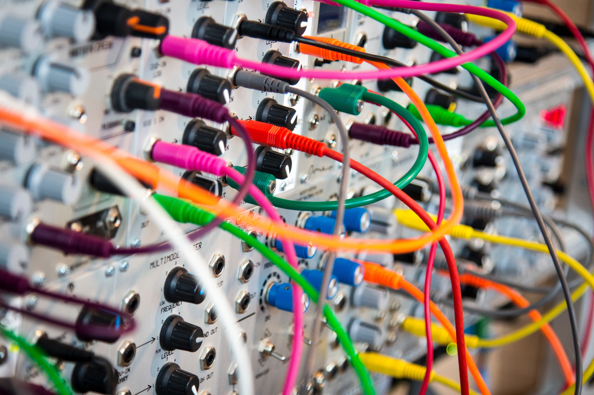

Redes Equipo 1 Seccion 7
Si podemos definir nuestro equipo en tan solo tres palabras serian "Amor a Redes", un equipo comprometido con el aprendizaje continuo de las infraestructuras de comunicaciones, en miras de convertirse eruditos en el area telecomunicaciones.

Anrés Anturi
201717541
ai.anturia@uniandes.edu.co
"No me gusta hacer nada aparte de los laboratorios de redes."
Mauricio España
201716244
ym.espana@uniandes.edu.co
"Me gusta ir al cine, comer, dormir y la clase de redes."

Juan Diego Barrios
201630576
jd.barriosc@uniandes.edu.co
"Ir a clase de redes, pero el laboratorio me mata."
